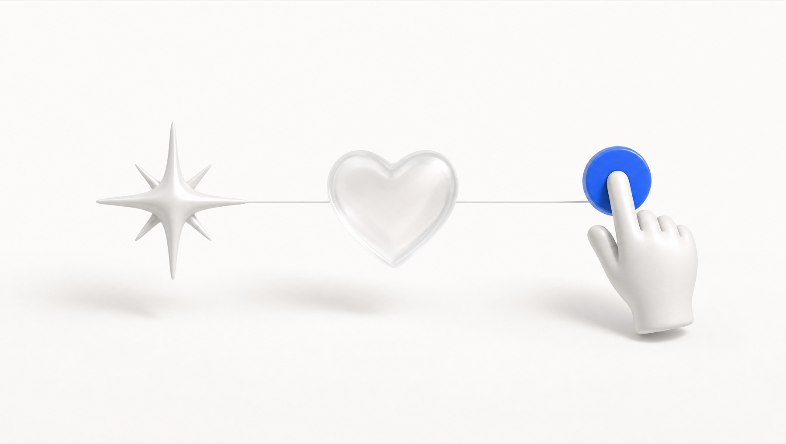
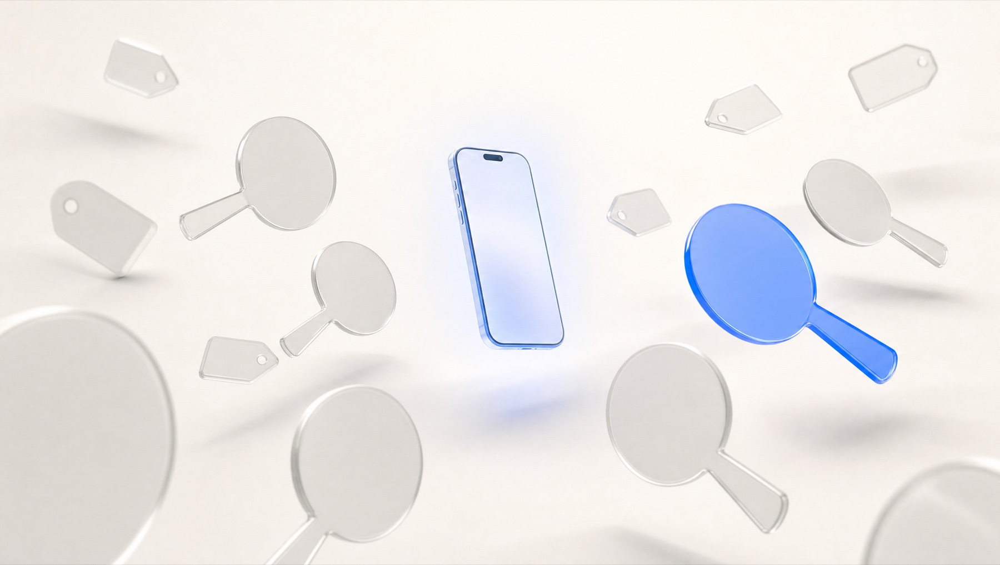

Apertura. Marca el tono: esto NO es una clase técnica aburrida, es entender el juego.
"Todo lo que vas a aprender en esta certificación —Meta, TikTok, Google— se construyó sobre una idea que nació hace 30 años. Hoy entendemos esa idea."
Promete el recorrido: historia → cómo funciona → qué gana tu negocio. Diles que al final del módulo van a ver un anuncio y van a entender qué está pasando por detrás. Energía alta, ritmo de charla, no de cátedra.
Hook. Crea tensión: el mundo funciona distinto a como creen.
Pide que saquen el teléfono mentalmente. Cada vez que abren Instagram, TikTok o ven un video en YouTube, en milisegundos ocurre una subasta entre anunciantes por aparecer frente a ellos.
"Cada scroll que das es una subasta que alguien acaba de ganar para llegar a ti. Al final de hoy, tú vas a estar del otro lado: vas a ser quien gana esa subasta."
No expliques aún la subasta a fondo —solo siembra la idea. La desarrollamos en el módulo del motor.
Mapa del módulo. Da seguridad: saben a dónde van.
Recórrelo rápido, una frase por bloque. No te detengas. El objetivo es que sientan que el camino es corto y claro.
"Cuatro bloques. Cuando lleguemos al cuarto, la publicidad digital va a haber dejado de ser un misterio."
Transición. Baja la luz mental: "vamos a viajar al inicio".
"Para entender hacia dónde va esto, hay que ver dónde empezó. Y empezó con un solo anuncio, un martes de 1994."
El nacimiento. Una sola idea: la atención se gasta.
"Cuatro de cada diez personas hicieron clic. Hoy, si logras que UNA de cada cien lo haga, vas ganando. ¿Qué pasó? La novedad se acabó —y empezó la competencia por tu atención."
Idea para dejar grabada: la atención es como el agua —cuando hay poca, hay que pelearla. Por eso hoy existe todo lo que vamos a ver.
La historia en una frase: pasamos de gritarle a todos, a hablarle a la persona correcta.
"En tres décadas pasamos de gritarle a todos, a hablarle al oído a la persona correcta. Esa es toda la historia."
Cierre con el "wow", simple: hoy la publicidad digital mueve más de un billón de dólares al año. De un anuncio en 1994 a mover casi todo el dinero de la publicidad del mundo.
"Cambió casi todo en la forma. Pero hay algo que no ha cambiado nada —y es lo más importante que te llevas hoy."
El gran cambio, visto desde tu lado: de anuncios genéricos a anuncios hechos para ti.
Ejemplo cercano: antes la tele te ponía el mismo comercial que a todos. Hoy abres Instagram y ves justo lo que andabas pensando comprar.
"Seguro te ha pasado: piensas en algo y, como por arte de magia, te aparece el anuncio. No es magia —hoy la publicidad se arma persona por persona. Y cuando te toque anunciarte, eso va a jugar a tu favor."

El ancla del módulo. Esto es lo que deben recordar.
Conecta con el banner de 1994: ya tenía las tres cosas. "¿Has hecho clic aquí?" (atención) → "lo harás" (curiosidad/deseo) → la flecha (acción). El mismo esqueleto que un anuncio de Nike hoy.
"Puedes aprender Meta, TikTok y Google a la perfección. Pero si tu anuncio no capta atención, no genera deseo y no pide una acción clara —ninguna plataforma te va a salvar. La herramienta cambia; el principio es eterno."
Tranquiliza: "no tienen que perseguir cada plataforma nueva; tienen que dominar esto".
Dato para dar peso (sin tecnicismos): estos tres pasos son tan viejos que ya se usaban antes de la radio. La herramienta cambia cada año; esto no cambia nunca.
"Abramos el cofre. ¿Cómo decide una plataforma qué anuncio te muestra a TI y no a otro? Son tres piezas."

Pieza 1: la subasta. El concepto que más sorprende.
"Imagina una subasta de arte, pero dura un parpadeo y el 'cuadro' eres tú. Varias marcas ofertan por mostrarte su anuncio. Y lo interesante: no siempre gana la más rica —gana la más relevante para ti. Por eso a veces dices 'justo estaba buscando esto'."
Sabe tu edad, dónde estás y qué cosas te gustan.
Sabe qué páginas visitaste y qué viste, aunque no compraras nada.
Con cada cosa que ves y tocas, te entiende un poco mejor.
Eso que viste y no compraste te vuelve a aparecer. Por eso sientes que los anuncios te persiguen.
Pieza 2: los datos. Por qué los anuncios parecen leerte la mente.
El bucle, en simple: entras a una página → esa página "avisa" que estuviste ahí → la plataforma te recuerda y te muestra anuncios de eso. No es tu micrófono espiándote: es tu propio recorrido por internet.
"¿Alguna vez viste unos tenis y te persiguieron toda la semana? No te espía el micrófono: entraste a la página, y el sistema simplemente no te olvidó. Cuando tú te anuncies, esa misma memoria va a trabajar para ti."
Pieza 3: el embudo. Por qué no le compras a alguien que acabas de conocer.
Piénsalo como cliente: tú tampoco le compras a alguien que acabas de conocer. Primero quieres confiar.
"A alguien que acabas de conocer no le pides matrimonio —primero lo invitas un café. Con las marcas es igual: tú avanzas por pasos. Y cuando te anuncies, vas a tener que respetar esos pasos."
"Hasta aquí lo viste como consumidor: cómo la publicidad te encuentra a ti. Ahora dale la vuelta e imagina que el del anuncio eres tú. Todo lo que viviste como cliente se convierte en cuatro ventajas que la publicidad de antes jamás te dio."
Sabes con precisión cuánto invertiste y cuánto vendiste. Se acabó el "creo que funcionó".
Le hablas solo a quien te puede comprar y dejas de pagar por llegarle a quien nunca lo haría.
Si funciona con poco, inviertes más y crece contigo. Subes o bajas la inversión cuando quieras.
No necesitas el presupuesto de una marca grande: puedes empezar con lo que cuesta un café al día.
El "para mí qué". Aterriza en su realidad de dueño de negocio.
Abre con una frase vieja del mundo de los negocios: "La mitad de lo que gasto en publicidad se desperdicia… pero no sé cuál mitad." El gancho: la publicidad digital por fin resolvió eso —hoy sabes cuál mitad.
Contrasta con lo tradicional: el espectacular no te dice cuánta gente compró, le llega a todos por igual y cuesta una fortuna fija. Lo digital es lo contrario en las 4.
"Un espectacular te cuesta una fortuna y nunca sabes si alguien compró por verlo. En digital, con lo que cuesta un café ya sabes si funciona. Y si funciona, le subes. Eso es jugar con ventaja."
Tres marcas que todos conocen, una lección cada una. Mantenlo simple.
Si quieres un ejemplo de "sin presupuesto": una marca de rastrillos se hizo gigante con un solo video casero y gracioso. No tenían dinero —tenían una buena idea.
"Ninguna de estas marcas ganó por gastar más. Ganaron porque entendieron a su gente. Y eso, al terminar la certificación, lo vas a poder hacer tú —no con más dinero, con más cabeza."
Cierre + puente al Módulo 2. Deja sensación de logro.
Recapitula los 4 puntos en 20 segundos. Reconócele al grupo lo que ya saben que no sabían al entrar.
"Entraste pensando que la publicidad digital era apretar un botón de 'promocionar'. Sales sabiendo que es una subasta, unos datos y un embudo. Eso ya te pone por delante del 90% de los negocios. En el Módulo 2 vemos lo más importante de todo: a quién le hablas —tu audiencia."